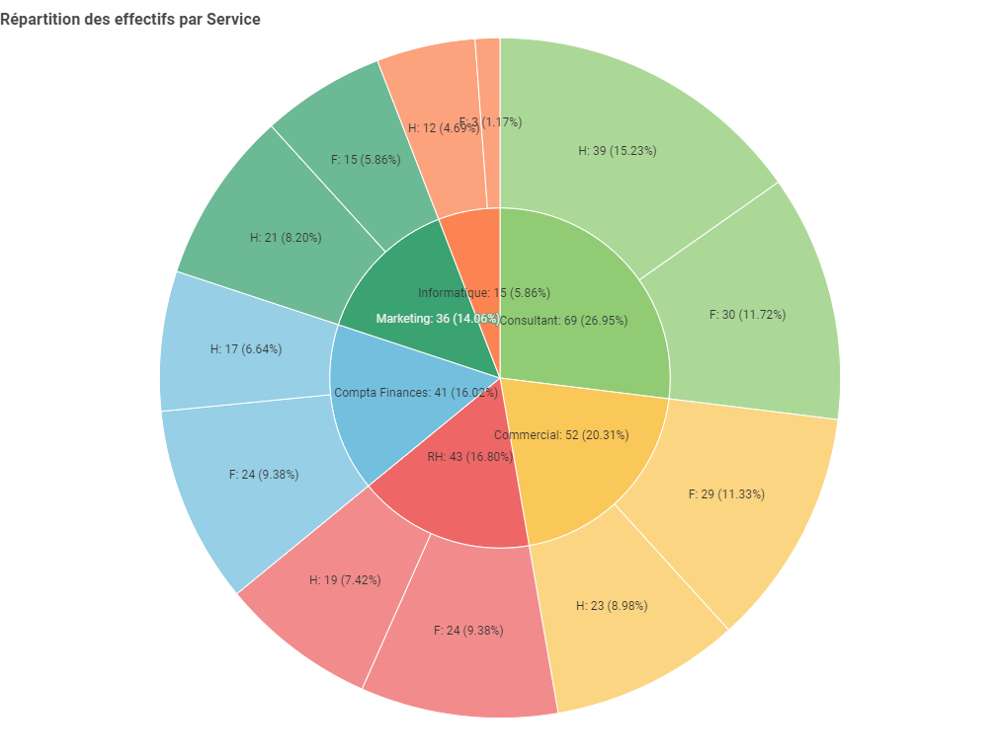
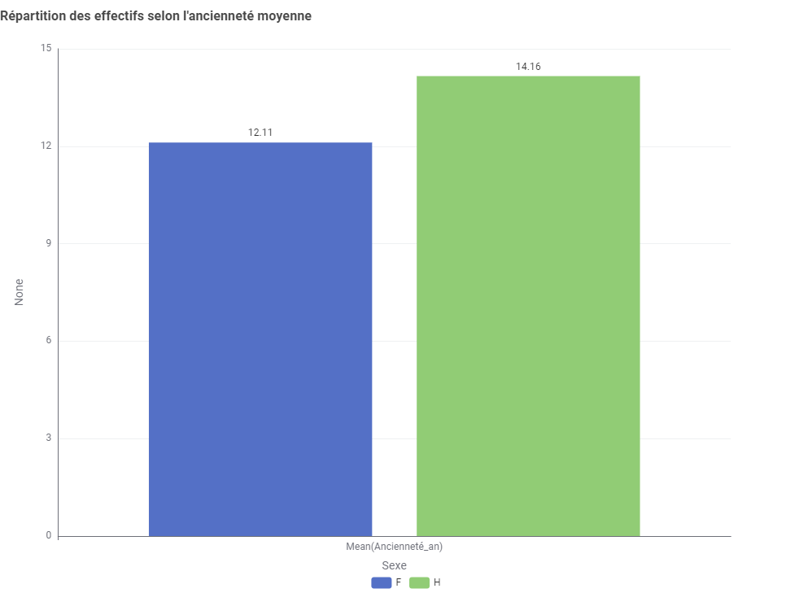

- 86/100index obtenu, pour un seuil légal à 75
- 9domaines réglementaires couverts
- 0donnée personnelle conservée
01 Contexte & besoin métier
Le diagnostic d'égalité professionnelle entre les femmes et les hommes est une obligation légale annuelle. Il est souvent produit à la main, sous tableur, par l'équipe RH, ce qui prend du temps et expose aux erreurs.
Le besoin était double. D'abord fiabiliser le calcul : sur neuf domaines réglementaires, une erreur peut remettre en cause la conformité. Ensuite rendre le diagnostic reproductible : s'il est refait de zéro chaque année, il est difficile de mesurer une progression.
Contrainte forte : les données mobilisées sont parmi les plus sensibles de l'entreprise (rémunérations, promotions, congés maternité, état civil). Le traitement devait être conforme au RGPD.
02 Données
Extractions du système d'information RH couvrant les neuf domaines d'action de l'égalité professionnelle : informations professionnelles, rémunération, embauche, formation, promotion, qualification, classification, conditions de travail, santé et sécurité. Les fichiers sont reliés entre eux par un identifiant salarié.
Qualité et limites
- Effectif modeste : 256 salariés répartis sur six services. Sur les plus petits services, les effectifs par sexe deviennent trop faibles pour qu'un écart soit interprétable.
- Données très sensibles : salaire de base, part variable, augmentations, promotions, congés maternité, situation familiale.
- Pas d'historique permettant de visualiser une tendance.
Traitement RGPD
Les données à caractère personnel ont été supprimées dès la collecte, avant toute analyse. Seul l'identifiant technique permettant de joindre les fichiers a été conservé.
03 Démarche
-
Construire un workflow
L'ensemble du traitement a été assemblé sous KNIME : jointures sur l'identifiant salarié, agrégations par service et par sexe, calculs d'écarts de dates pour l'ancienneté, filtres et contrôles de cohérence.
Pourquoi KNIME
Un workflow visuel se lit comme un schéma : chaque étape est un bloc nommé, l'enchaînement est explicite, et une modification se fait sans écrire de code. Une équipe RH peut donc le reprendre facilement.
-
Poser les indicateurs de référence dès le départ
La répartition femmes / hommes par service, par tranche d'âge et par ancienneté a été calculée avant toute analyse d'écart.
Pourquoi ce choix
Un écart de rémunération ne s'interprète qu'entre des postes comparables. Constater que les femmes gagnent moins en moyenne ne dit rien tant qu'on ignore si elles sont réparties différemment entre les services et les niveaux de qualification.
-
Contrôler la cohérence avant de calculer
Une vue statistique a été insérée dans le workflow pour détecter valeurs aberrantes et incohérences (dates impossibles, montants hors plage, modalités inattendues) avant que ces anomalies ne se propagent dans le score final.
-
Générer automatiquement graphiques et score
Le workflow produit les visualisations par domaine (embauche, promotion, qualification, conditions de travail, rémunération effective), puis calcule l'index sur 100.
Pourquoi ce choix
Les graphiques sont produits par le workflow lui-même. L'an prochain, il suffira de mettre à jour les fichiers sources pour refaire tout le diagnostic et le comparer à celui de cette année.
04 Résultats & impact
Index d'égalité professionnelle : 86 sur 100, pour un seuil de conformité fixé à 75. L'entreprise est conforme, mais le score global masque deux déséquilibres identifiés.


Constats
- Sous-représentation des femmes dans les niveaux de qualification élevés, particulièrement visible sur les fonctions techniques.
- Écarts de rémunération sur le haut de la distribution : parmi les dix salaires les plus élevés, les femmes sont minoritaires.
- Deux ans d'écart d'ancienneté moyenne, qui explique une partie seulement des écarts observés.
Recommandations
- Programme de formation au leadership ciblé sur les femmes déjà en poste, pour agir sur le vivier de promotion interne.
- Des grilles salariales fondées sur des critères de performance clairs, pour limiter les décisions arbitraires.
- Actions de sensibilisation auprès des managers qui décident des augmentations et des promotions.
- Refaire le diagnostic chaque année avec le même workflow, pour mesurer les progrès d'une année sur l'autre.
05 Limites & prochaines pistes
Un bon score ne règle pas tout. 86 sur 100 dépasse largement le seuil légal, ce qui peut inviter à considérer le sujet comme traité. Les déséquilibres de qualification identifiés subsistent pourtant.
L'analyse porte sur une seule année. Sans historique, impossible de distinguer une situation qui s'améliore d'une situation qui se dégrade.
Les petits effectifs limitent la lecture. Avec 15 personnes en Informatique, un écart peut tenir à une seule embauche et ne traduire aucune tendance.
Prochaines pistes
- Constituer un historique sur plusieurs années pour suivre l'évolution.
- Isoler l'effet de l'ancienneté dans les écarts de rémunération, pour distinguer ce qui vient de l'ancienneté et ce qui vient d'une différence de traitement.
- Former une personne de l'équipe RH à la modification du workflow, pour garantir son autonomie lors du prochain changement réglementaire.